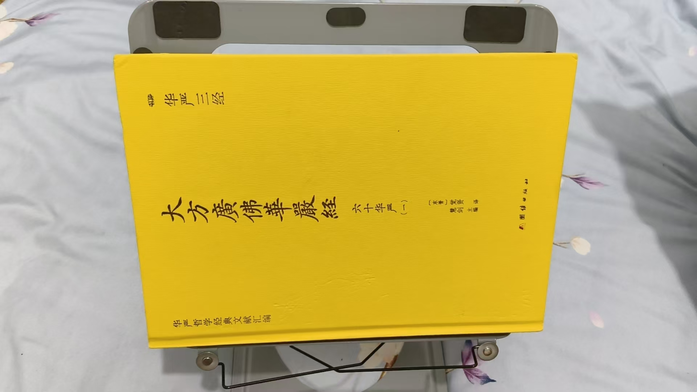

20260908分身多少决定十地层次
修炼修行 原始对话记录心想事成
以前找不到十地菩萨的细节分化
这下就有了，并且如何修，修到什么细节，说的清楚明白
找到了分身多少决定十地层次
一定要知道，生成元婴，分身化身，那都是我接回天命原神后，我加持操作的
自己修几十年也做不到，所以道经师的师，佛法僧的僧
也是三宝之一
亲传师父的重要性
[强][强][强]

读完
还不算慢
开始六十华严第二
以下为编者整理的主题文章
编者整理 · 主题文章
分身多少决定十地：一则修法记录
一句话结论：本页记录提出"分身多少决定十地层次"，并强调元婴、分身化身需"接回天命原神后加持操作"，自己修几十年也难做到，故凸显"亲传师父"的重要。编者按记录转述，属修习说法。
一、本页是什么
本页极短，是一句"心得"式记录，承接上一篇《眷属，就是分身化身》：
找到了分身多少决定十地层次。……生成元婴、分身化身，那都是我接回天命原神后，我加持操作的；自己修几十年也做不到。
二、本页的两个要点
- 十地层级的判定：以"分身多少"对应"菩萨十地"的层级，称"细节分化说得清楚明白"；
- 生成的来源：元婴、分身化身非个人独修可得，而记为"接回天命原神后加持操作"的产物。
本页的口气是"心得"而非"教程"：它没有写具体步骤，只交代了"谁做的、靠什么做的"。
三、十地、分身与师父（速查）
| 要素 | 本页说法 |
|---|---|
| 十地 | 大乘修行阶位 |
| 分身的量 | 被当作定层级的指标 |
| 生成方式 | 由"接回原神后"加持而成 |
| 结论 | 凸显亲传师父不可替代 |
本页把师承比作"道经师的师、佛法僧的僧"，即三宝之一，强调"亲传师父的重要性"。同页还夹着"六十华严读完""修行近五十年仍觉只是皮毛"一类的自述，可见作者把自己定位为"引路者"而非"完成者"。
四、关于"接回原神"的说法
"天命原神"是本体系用词，指修行者本有的"元始之神"。本页认为要靠师力"接回"，个人难成。同主题的《找到你们的原神……》记录则把它与"时空异位""引领下来"连在一起讲。这些均属修习传统中的说法。本页另有一句值得注意：作者称"现在的大师，讲出来不是说真理，直接就是天理"，以此反衬自己"越学越谦虚"的态度。
五、常见问题
问：这里是在说谁？ 本页是作者第一人称的记录，称相关成果由其"加持操作"而成；本站只作转述。
问："分身"能数得清吗？ 这是该体系的一种象征化指标，没有可验证的标准。
问：为什么强调师父？ 本页的逻辑是"自己修几十年也做不到"，故须依师。属该体系的观念，并非普遍结论。
六、提醒
- 关键句：分身多少决定十地层次；
- 本页篇幅极短，理解需结合《眷属，就是分身化身》；
- 全站按传统文化整理，不承诺功效。
说明与免责：本站为民间修炼、民俗文化与传统文化资料的整理与记录，内容源自传承者口传与个人修习体会，仅供文化交流与研究参考，不构成医疗、健康、投资或任何功效承诺。所述内容属传统术数范畴，请理性看待；如身体不适，请及时就医。请遵守法律法规与公序良俗。